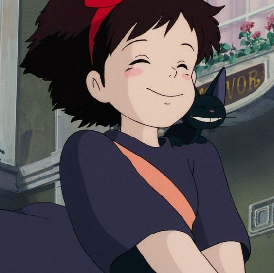
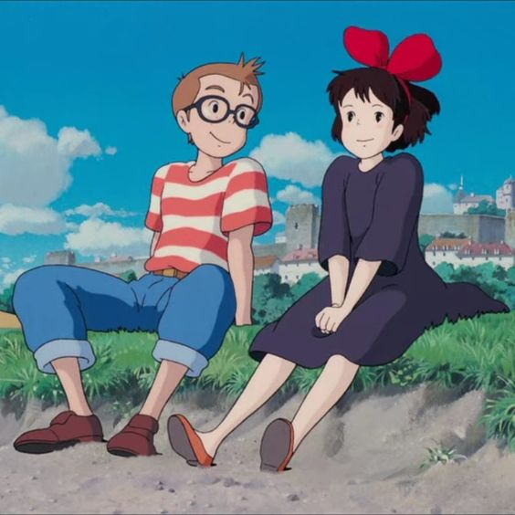
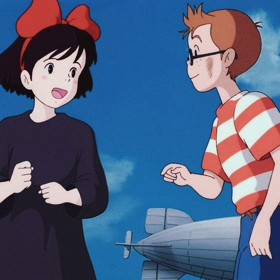
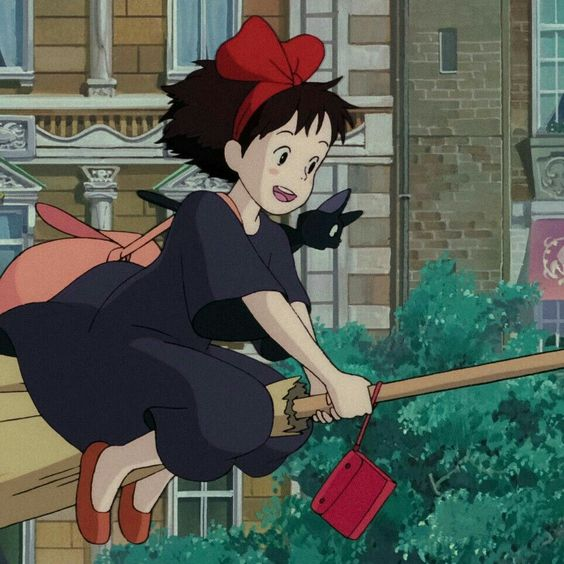

Al cumplir los 13 años, la brujita Kiki debe, como manda la tradición, abandonar su casa y, así, llega a una ciudad donde un panadero la contrata para repartir el pan con su escoba. Un día, Kiki descubre que ya no puede hacer levitar su escoba.
   Según la tradición de las brujas, cuando estas cumplen los trece años deben abandonar la casa de sus padres y buscar una ciudad donde sus servicios sean requeridos, y quedarse allí durante un año.
De esta manera, Kiki comenzará el camino que la llevará a convertirse definitivamente en bruja. Este viaje lo realiza junto a su amigo Jiji, un gato negro muy simpático, y montada en su escoba voladora.
Su viaje inicial la llevará a instalarse en una ciudad marítima donde comenzará a conocer el mundo y a conocerse a sí misma. Durante su viaje conocerá a grandes amigos, como Tombo u Osono.